Derivatives¶
Derivatives are one of my favorite things in math. At first they seem like calculating their values will be quite complicated, but it turns out to be surprisingly easy. Derivatives are also not useless gibberish isolated from real life, and there's a practical demonstration about how they are useful at the end of the chapter.
What is a derivative?¶
A difference means how much a value changes. For example, if the value of  is first 5 and then we change it to 6, changes by
is first 5 and then we change it to 6, changes by  . Here
. Here
 is the Greek delta letter, so if someone's code has a variable named
is the Greek delta letter, so if someone's code has a variable named
deltax it means this.
Let's draw a graph of something like  :
:
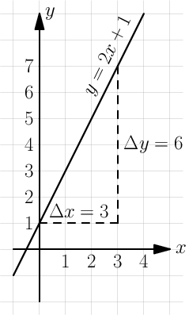
For example, at  we know that
we know that  .
.
Let's calculate the slope of this line:

The bigger the slope, the faster the line goes up, so the slope describes the
"growing speed" or "changing speed". I used the points  and
and
 when calculating the slope, but you should get the same slope with any
pair of points chosen from the line because the height grows at the same speed
everywhere.
when calculating the slope, but you should get the same slope with any
pair of points chosen from the line because the height grows at the same speed
everywhere.
The derivative  is also a "changing speed", but
is also a "changing speed", but  instead of means that the changes we use for calculating derivatives
are infinitely tiny. You might be worried about calculating the
because if then we're dividing by zero, but
instead of means that the changes we use for calculating derivatives
are infinitely tiny. You might be worried about calculating the
because if then we're dividing by zero, but  is not
zero; it's just really, really small.
is not
zero; it's just really, really small.
If the graph is not a straight line, we get different  ratios depending on which points we choose for calculating
ratios depending on which points we choose for calculating  and
and
 . The derivative is not the same number everywhere,
but let's try to figure out how to calculate it anyway.
. The derivative is not the same number everywhere,
but let's try to figure out how to calculate it anyway.
Let's look at  and of the graph
and of the graph  , where
, where  can be any
function that has a derivative. Most functions you'll come across have a
derivative; if you want to know more, click
here.
can be any
function that has a derivative. Most functions you'll come across have a
derivative; if you want to know more, click
here.
The image at right seems to say that  . Let's try to solve
(see the equation thing on the basics
page):
. Let's try to solve
(see the equation thing on the basics
page):
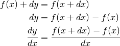
Most mathematicians don't like the above formula because is a
"small number" and it isn't really clear how it behaves in different
situations. Here's a better definition:
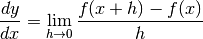
The  thing means that we take the limit as
thing means that we take the limit as  goes to 0. It's
essentially same as our thing, but more explicit and better defined in
some corner cases.
goes to 0. It's
essentially same as our thing, but more explicit and better defined in
some corner cases.
First Example¶
The graph  is curvy:
is curvy:
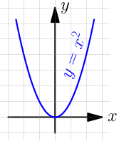
Let's find the derivative of  by plugging in 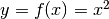 to the
definition we ended up with. If we just try to evaluate it at 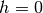 we get
by plugging in 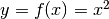 to the
definition we ended up with. If we just try to evaluate it at 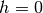 we get
 so you might think that we need to evaluate it at e.g.
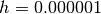, but we don't! Have a look:
so you might think that we need to evaluate it at e.g.
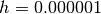, but we don't! Have a look:
Handy thing: 
Proof:

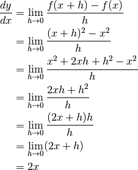
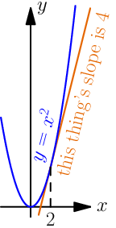I think this is cool. We started with a complicated-looking thing but finally
we arrived at just  . What's more, the is not just a random value we
got out of a spooky calculation; for example, at
. What's more, the is not just a random value we
got out of a spooky calculation; for example, at  the derivative is
the derivative is
 , so if we draw a straight line that barely touches at
its slope will also be 4 like in the image at right.
, so if we draw a straight line that barely touches at
its slope will also be 4 like in the image at right.
You can also find the derivative of the  example we looked at earlier,
and turns out that 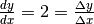. It makes sense
because derivatives are just like slopes but they also work with curvy things,
and there's no difference between a slope and a derivative of a straight line.
example we looked at earlier,
and turns out that 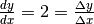. It makes sense
because derivatives are just like slopes but they also work with curvy things,
and there's no difference between a slope and a derivative of a straight line.
Note
The derivative can be also written as  ,
although it doesn't make much sense because doesn't mean times
,
although it doesn't make much sense because doesn't mean times  .
.
Another common style is to put a single quote after a function name, like
 .
.
Faster!¶
Let's say that you want to calculate something like this:

That would be a horribly complicated calculation with the thing.
Let's be a bit more clever. We have a bunch of things being added and
substracted together, so maybe we could deal with them somehow? Let's
say that we want to find the derivative of  where and
where and  can be any functions (as long as the derivative exists). They could be
for example
can be any functions (as long as the derivative exists). They could be
for example  and
and  , but let's see what we get if
we don't plug in any values:
, but let's see what we get if
we don't plug in any values:
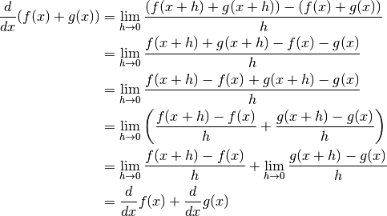
That's quite nice! So if we want to find the derivative of a bunch of
things added together we can just find derivatives of each thing one by
one. The same thing also works with  instead of
instead of  ·
·
We can actually take a step further and find the derivative of  where
where  is any constant, e.g.
is any constant, e.g.  :
:

There are a couple more things we need: 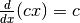 because if
is incremented by something then increments times as much,
and  because never changes regardless of the
value of . You can also use the definition of derivative to show that
these work.
because never changes regardless of the
value of . You can also use the definition of derivative to show that
these work.
So, with all that we can calculate the derivative easily:

See Also
The summary page has a derivative section with many more rules. You may need them if you want to find derivatives of different functions than the functions in this chapter.
You can also use a nice symbolic calculation library, like Python's sympy (can be installed with pip):
>>> from sympy import *
>>> init_printing()
>>> x = Symbol('x')
>>> diff(x**2, x)
2⋅x
>>> diff((2*x)**2, x)
8⋅x
>>> diff(5 * x**3 - 6 * x**2 + 7*x - 123, x)
2
15⋅x - 12⋅x + 7
Here "diff" is short for "differenciate", and it means finding a derivative.
Libraries like sympy are also useful for doing long and messy calculations like the one we did above:
>>> def f(x):
... return x**2
...
>>> h = Symbol('h')
>>> (f(x+h)-f(x))/h
2 2
- x + (h + x)
───────────────
h
>>> simplify((f(x+h)-f(x))/h)
h + 2⋅x
Example: Smooth Jumps¶
Let's say you're making a game where a player can jump over something. If the player moves right at a steady speed, which of these jumps looks best?
The answer is obvious – the rightmost jump looks best. It's time to figure out how to make games with jumps like that.
Let's say that  is time and is the height of our player, so we get this
graph:
is time and is the height of our player, so we get this
graph:
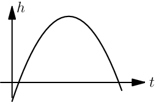
This looks like a parabola, and the equation of a parabola is 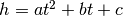
where  ,
,  and are constants. The changing speed of height is the
falling speed. Let's call that
and are constants. The changing speed of height is the
falling speed. Let's call that  like velocity.
like velocity.

On the other hand, the changing speed of velocity is the acceleration caused by
gravity. Let's call that .

Note how the disappeared and we're left with just the constant  . This
makes sense because the gravity is always the same, no matter what time it is.
. This
makes sense because the gravity is always the same, no matter what time it is.
This Python program...
height = 0
velocity = 10
gravity = 2
while height >= 0:
print(' '*height + 'O')
height += velocity
velocity -= gravity
...prints this awesome parabola:
O
O
O
O
O
O
O
O
O
O
O
O
You can use similar code for doing jumps in games. Here's a demo created with my canvaswrapper.js script. Click it and use arrow keys to move the ball.
Here's the code:
var screen = new CanvasWrapper('canvas1');
const GRAVITY = 1.5;
var ball = {
x: screen.width/2, // centered
height: 0, // distance from bottom of screen to player's bottom
velocity: 0, // positive means up
velocityMax: 30, // velocity immediately after a jump
sidewayMovement: 0, // -1 is left, +1 right
sidewaySpeed: 10,
radius: 30,
};
runRepeatedly(function() {
screen.fill('black');
screen.drawCircle(ball.x, screen.height-ball.height-ball.radius,
ball.radius, 'white');
ball.x += ball.sidewayMovement * ball.sidewaySpeed;
ball.height += ball.velocity;
ball.velocity -= GRAVITY;
if (ball.height < 0) {
// ball hits the ground
ball.height = 0;
ball.velocity = 0;
}
screen.getEvents().forEach(evt => {
if (evt.type == 'keydown') {
if (evt.key == 'ArrowLeft') {
ball.sidewayMovement = -1;
} else if (evt.key == 'ArrowRight') {
ball.sidewayMovement = 1;
} else if (evt.key == 'ArrowUp') {
ball.velocity = ball.velocityMax;
}
} else if (evt.type == 'keyup' && (
(evt.key == 'ArrowLeft' && ball.sidewayMovement == -1) ||
(evt.key == 'ArrowRight' && ball.sidewayMovement == 1))) {
// cancel the previous ArrowLeft or ArrowRight press
ball.sidewayMovement = 0;
}
});
});